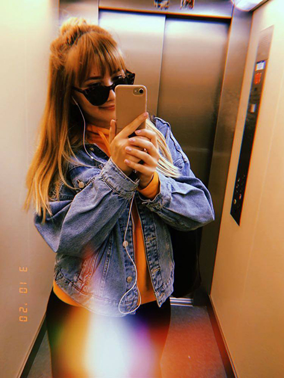
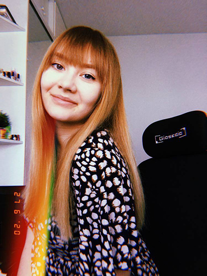

Jestem 21-letnią studentką papiernictwa i poligrafii na Politechnice Warszawskiej oraz projektowania graficznego w Warszawskiej Szkole Reklamy. Interesuję się rysunkiem i grafiką, ale również gotowaniem czy zwierzętami. W swoich pracach najczęściej wykorzystuję tusz, markery lub cienkopisy, czasami również akwarele. Cechą moich rysunków jest charakterystyczna „niedbała” kreska. W najbliższym i dalszym czasie mam w planach skupić się na samorozwoju i ciągłym dokształcaniu się w zakresie rysunku i sztuki. W przyszłości chcę zostać profesjonalnym grafikiem freelancerem, projektującym m. in. strony internetowe.
 